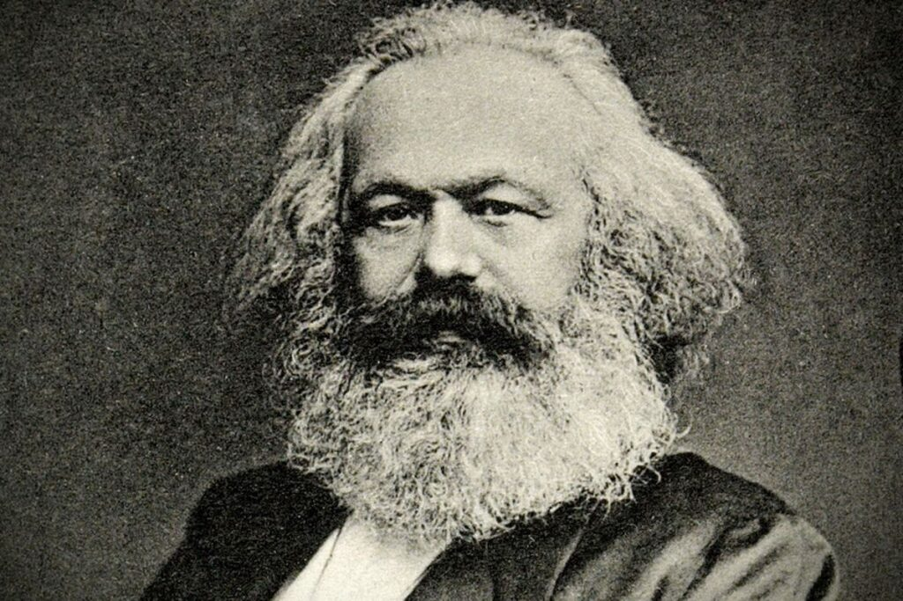
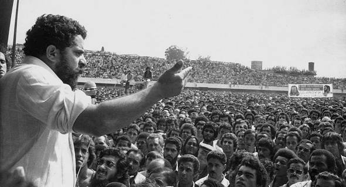

Os movimentos sociais são parte importante de qualquer sociedade democrático, isso porque é através desses movimentos que as pautas de interesse do povo são trazidas à luz e, mais importante, à luta. Um movimento social pode ser caracterizado pela junção de um grupo (ou grupos) de pessoas que defendem e lutam por uma mesma causa social e/ou política de forma organizada. Os movimentos sociais podem ser definidos como Conjunturais ou Estruturais; os primeiros são mais “efêmeros”, isso por que têm revindicações específicas e de curto prazo: como manifestações por conta do preço das passagens de ônibus ou dos combustíveis, os segundos são mais “duradouros” e podem se estender ao longo das décadas, isso se dá pelo caráter estrutural(como o nome sugere) de suas demandas, destacam-se entre esses o Movimento Feminista, o Movimento LGBTQIA+, o Movimento Negro e outros tantos que lutam por direitos civis e sociais.
No Brasil, os movimentos sociais passam a ter grande destaque na década de 70 (durante o ponto alto da ditadura militar), com ênfase nos movimentos trabalhistas e o movimento estudantil. Também são notáveis os famosos MST (Movimento dos Trabalhadores Rurais Sem-Terra) e MTST (Movimento dos Trabalhadores Sem Teto) que lutam pelo direito à moradia e terra. Além, é claro, dos mesmos movimentos identitários que estão presentes no cotidiano de todos nós.
O sindicalismo é o movimento que, através dos sindicatos, luta pela classe trabalhadora. Durante o avanço da Revolução Industrial e a crescente do capitalismo, o proletariado é criado, e dessa forma nos deparamos com grandes massas apartadas de qualquer tipo de proteção em seu setor de trabalho. Assim, os chamados sindicatos têm origem no século XIX, com as trade unions, os quais visavam, principalmente, a organização dos trabalhadores. Sua consolidação, entretanto, se deu apenas no século XX. Com o processo de modernização e industrialização, veio também a demanda de organização, juntamente da necessidade de criação de leis trabalhistas, como forma de obter certa dignidade à população.
Com o capitalismo emergente e a crescente do trabalho assalariado como principal relação de trabalho na humanidade, a organização dos operários em busca de direitos mínimos e dignidade no seu trabalho foi um dos fenômenos sociais mais importantes da história recente. O movimento sindical nasce nesse contexto de luta de classe como o principal meio de luta da classe operária contra cargas horárias abusivas, condições precárias de trabalho e Estados que, em geral, não davam suporte algum a esses trabalhadores. É através dos sindicatos que se conquistaram e mantiveram até hoje muitos direitos que garantem o mínimo de dignidade aos trabalhadores até hoje. Claro que ainda há muito o que se conquistar nesse quesito, e o sistema capitalista se renova diariamente criando novas formas de exploração que cada vez mais fogem ao alcance dos sindicatos e movimentos trabalhistas em geral.
Seria inviável tratar do movimento sindical sem ao menos ponderar tamanha influência que Karl Marx desempenhou para suas pautas. O marxismo foi fundamental para o estudo das problemáticas e motivos de revolta no meio sindical, desde o entendimento da crise da organização dos trabalhadores à relação com o Estado capitalista. Sua extensa obra, dada até hoje como um dos principais meios de apoio da classe proletária, abrange clássicos como "O capital" e "O manifesto comunista".
Direcionando nossa perspectiva à realidade brasileira quanto ao sindicalismo, é de suma importância observarmos a força que o Partido dos Trabalhadores (PT) ganhou na permanência no poder durante treze anos. Foi através do governo de Luís Inácio, conhecido como Lula, que o movimento sindical pôde, enfim, ganhar notoriedade no Brasil. Antes e durante a gestão de Lula, seus discursos se direcionavam à luta da classe trabalhadora e o combate à extrema pobreza no país.
- Politize! - O que são movimentos sociais?
- Politize! - História do sindicalismo no Brasil e no mundo
- Infoescola - Sindicalismo
- Brasil Escola - Sindicalismo
- Brasil Escola - Movimento Operário Brasileiro
- marxismo21 - Marxismo e Luta Sindical
- diplomatique - A reforma sindical na era Lula: pontos e contrapontos